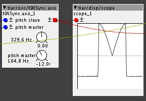
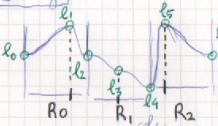
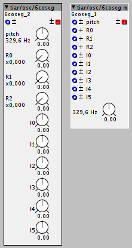
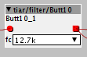
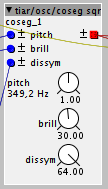
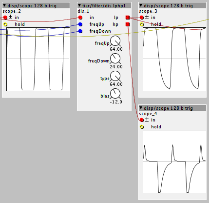
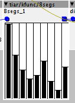
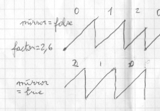

Hi. I can't find the ZDF SVF 2 filter in the community library. Has it been posted yet?
Tiar / SmashedTransistors Contributions
lokki
#61
it's there, but not in the browser. open a new patch, load the object (ZDF SVF 2) and load it's help patch.
Praxis
#62
Sorry, I'm new to this. What do you mean when you say load the object and it's help patch? Where do I find it?
lokki
#63
open a new empty patch, doubleclick on the empty space in the patch and the object browser should come up. type ZDF (yes case does matter, something that maybe should be changed? @johannes) and choose the version two. you now see some sort of preview of the object. click on the black triangle in the top left side of the object and choose help. that's it.
You can also access all the help patches from the Axoloti Editor "Help" menu on the "File Edit Board Window Help" menu bar. That's quite handy 

Object tiar/osc/KWSync
try menu: Help -> Library -> Community -> tiar -> osc -> KWSync
Yep, I had to do it 
slightly different "horns" and sound compared to the batman/devil one.

Note: First order DPW antialiasing of waveform and internal sync.
Object tiar/osc/6coseg and 6coseg m
try menu: Help -> Library -> Community -> tiar -> osc -> 6coseg
and menu: Help -> Library -> Community -> tiar -> osc -> 6coseg m
This is a 6 cosine segment waveform bandlimited oscillator:

you can control 6 levels and three "ratios".
Modulate the nine parameters for sweet "new age" pads and phase distortion sounds.

Object tiar/kfilter/hyst
try menu: Help -> Library -> Community -> tiar -> kfilter -> hyst
This is a hysteresis comparator (aka Schmitt trigger). It takes a control rate input and has a boolean output.
The hysteresis is set by two level parameters.
This object can be used for debouncing digital inputs connected to switches (see the help patch).

Object tiar/filter/Butt10
try menu: Help -> Library -> Community -> tiar -> filter -> Butt10
This is a static high order Butterworth filter with ten frequency presets (ranging from 900Hz up to 17.7kHz).
It's meant to be used as a "brickwall" filter, for example just before the output, to mimic the band limitation of some early synthesizers or effects.

Object tiar/osc/coseg sqr
try menu: Help -> Library -> Community -> tiar -> osc -> coseg sqr
This is a low CPU antialiased square wave generator with brilliance (pitch controlled like a low pass filter) and dissymmetry (PWM from 50% to 66%) control.

Library updates:
the osc directory have now three sub directories:
- wf12 contains the 12 steps antialiased oscillators and companion objects (see the menu bar Help -> Library -> Community -> tiar -> osc -> wf12 help patches to get an idea of what they can do).
wf16 contains the 16 segment antialiased oscillators. Note that the bank companion objects have been corrected. (see the menu bar Help -> Library -> Community -> tiar -> osc -> wf16 help patches).
Steps contains the Five, Six and Seven steps oscillators along with their variants.
Patch:
menu: File -> Library -> Community -> tiar -> reed -> Misty
Sort of "physical" modelling of a brass instrument (self PM through a series of filters and delays).
Note that it is controlled by channel (or poly) aftertouch velocity only keyboards won't work with this one.
{kind=link}
Object tiar/filter/dis lphp1
try menu: Help -> Library -> Community -> tiar -> filter -> dis lphp1
This is a barbaric name for an object that can mimic "waveshapers" used in some early string machines. This kind of device allowed to add even harmonics to a square wave input signal.
Basically it is a first order filter, sort of basic Resistor/Capacitor low pass filter, with an hint of "diodes". These "diodes" allow to have two different "charging/discharging resistors".

Here, you can control the charging and discharging "frequencies" freqUp freqDown.
You can control the type of "diode commutation":
- type = 0: rates switched on output sign (à la Salino)
- type = 64: rates switched on rising/decaying (à la Ralond)
And you can add a bias.
You have both "low pass" and "high pass" outputs.
Object tiar/kfunc/u8u
try menu: Help -> Library -> Community -> tiar ->kfunc -> u8u
This is a simple unipolar k rate function defined by 8 segments.
(i did not find this kind of object in existing libs, maybe i missed it ?)
It can be used to shape saw LFOs, envelopes and many other control signals.
Note: For convenience, i am adding bipolar variants of this one. Meanwhile, you can use factor/conv/unipolar2bipolar and bipolar2unipolar if you need bipolar functions.

Patch: MetallicHorizon
An old school sci fy ambiance generator. It uses and abuses of the "8segs" kfunc object
menu: File -> Library -> Community -> tiar -> MetallicHorizon.axp
Object tiar/gain/DCA
try menu: Help -> Library -> Community -> tiar ->gain -> DCA
It is a "De clicked Digital Controlled Amplifier".
As expected, it multiplies the audio input "in" by the k rate "gain" input.
Unlike the factory gain/vca, the gain input is not interpolated: the gain is brutaly updated at zero crossings of the input.
This old trick allows the sharpest attack transients without clicks.
Object tiar/kfunc/Modulo
try menu: Help -> Library -> Community -> tiar ->kfunc -> Modulo
This is a unipolar k rate Modulo function.

The factor, multiplies the input signal.
It is the moduloed to 64.0.
Try the help patch to get an idea of what it does.
The "mirror" parameter is useful when using it on descending ramps or envelopes with non integer factors.
How to create swing feel?
Object tiar/noise/Geiger
try menu: Help -> Library -> Community -> tiar -> noise -> Geiger
An impulse (more exactly transients) noise generator. The paramater and inputs controls the density...
Object tiar/kfunc/u8b
try menu: Help -> Library -> Community -> tiar ->kfunc -> u8b
This is a k rate function defined by 8 segments. It takes a unipolar input and has a bipolar output.
As i find them really handy for mapping/adapting control ranges, I plan to make a bunch of those with different input and output types and number of segments.
Object tiar/spat/pan m
try menu: Help -> Library -> Community -> tiar ->spat -> pan m
A constant gain^2 pan with modulation.
The direct use of a linear gain function - as in the factory pan - object leads to a variation of gain^2, the consequence being a variation of volume.
This object uses the fact that sin(x)^2 + cos(x)^2 = 1 to get uniform volume.
Objects tiar/kfunc segment objects.
try menu: Help -> Library -> Community -> tiar ->kfunc -> b8u for an example
This is a series of 16 objects that can be seen as extensions of the handy TSG/math/map objects by @TheSlowGrowth.
Instead of a single segment, defined by the output range, these objects have 2, 4, 8 or 16 segments.
Naming:
- input type (u for unipolar, b for bipolar)
- number of segments (2, 4, 8 or 16)
- output type (u for unipolar, b for bipolar)
Examples:
- "b2u" maps a bipolar value to positive value with a two segment function. The first segment correspond to negative input values, the second segment correspond to positive input values.
- "u8b" maps a positive input to a bipolar output with 8 segments.
2 and 4 segment objects can be used for mapping control values.
8 and 16 segment objects can be used for complex envelope or LFO generators.